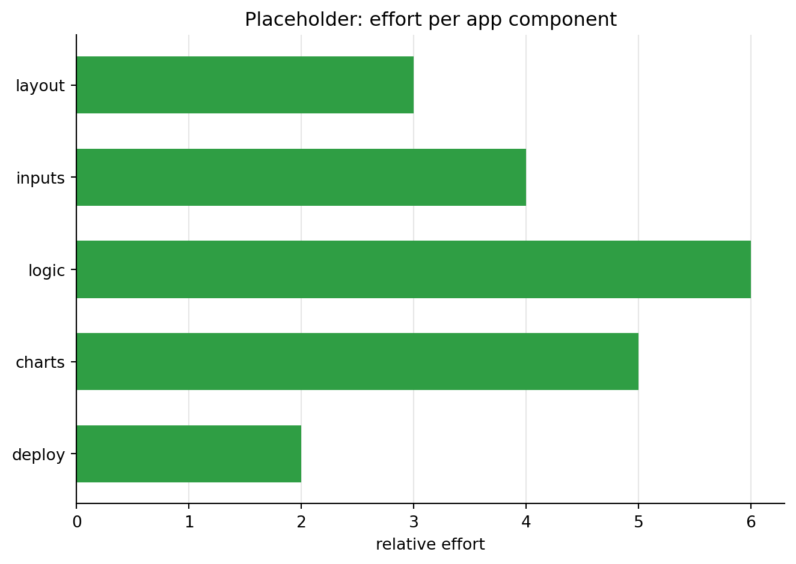

Session 3 · de-code app building
Democratizing Coding with AI — Wed 7 Oct
Topics
1 What is an app?
1.1 A flexible definition
In this course, an app is any program that takes some input, does a job for someone, and produces output they can use — without them having to read or change the code. That makes “app” a wide term. What differs is how the input arrives, where the program runs, and who uses it:
| App | Input | Job | Output | Who runs it |
|---|---|---|---|---|
| Notebook cell with settings at the top | a few variables you edit | analyse a dataset | tables, charts, a report file | you, in Colab |
| Command-line script | a file name, options | convert or clean files | new files | you, in a terminal |
| Spreadsheet with formulas | numbers typed into cells | calculate | totals, charts | anyone with Excel |
| Interactive dashboard (Shiny) | menus, sliders | filter and summarise data | live charts and tables | anyone with the link |
| Local web page (HTML + JavaScript) | clicks, typed text | store and show information | an updated page | anyone who opens the file |
| Hosted web app | forms, accounts | a service | pages, emails, downloads | the public |
| Chatbot (custom GPT, Gemini Gem) | questions in plain language | answer with set instructions | text, files | anyone with access |
| Mobile app | taps, camera, location | everything above, on a phone | screens, notifications | app-store users |
We start at the top of the table, with an app that is a single notebook cell, and work our way down.
Take the local web page row as an example: a single HTML file that runs in the browser, with nothing to install. Ask Gemini for ideas of what such an app can be:
ideas_prompt = """
List 10 suggestions for simple single-page web apps. Each one should be visually
impressive, somewhat interactive, and useful.
"""A concrete example from statistics: an app that shows what correlation looks like. Ask Gemini to write it, save the answer as an .html file, and open it in your browser:
scatter_prompt = """
Please generate code for an interactive single-page app that uses Observable JS to plot
two random normally distributed variables against each other as a scatter plot with a
trend line. Provide a slider that updates the strength of the association, and buttons
for a positive vs a negative relationship.
"""The same idea can also run on a server. Here it is as a Shiny app, hosted online: Interactive bivariate normal scatter plot.
1.2 A toy app prompt
This prompt asks Gemini for a tiny report app: one Colab cell with its settings at the top. Paste the prompt into Gemini, then paste the code it returns into a new cell in Colab. The cell below only stores the text.
prompt = """
Write one Google Colab Python code cell that works as a small report app.
Settings at the top of the cell, as plain variables the user can edit:
- DATA_URL = "https://raw.githubusercontent.com/nils-holmberg/de-code/main/csv/komp014-simulated-data-n100.tsv"
- OUTCOME = "DV_INDEX", GROUP = "IV_CAT_GROUP", PREFIX = "app"
The cell should:
1. load the tab-separated file from DATA_URL with pandas
2. save a summary table (count, mean, SD, min, quartiles, max) of all columns whose
name contains INDEX to PREFIX-summary.csv
3. save one histogram per index as PREFIX-hist-<index>.png
4. save a box plot of OUTCOME by GROUP as PREFIX-groups.png
5. save one self-contained HTML report, PREFIX-report.html, with the summary table and
all charts embedded as base64 images, so it is a single file that opens anywhere
6. print the name and size of every file it wrote
Write all files to the current working folder. Use only pandas and matplotlib. Return
only the code, with short comments.
"""1.3 The generated app
A version of the code the model returns. Run it in the session notebook in Colab, then open the Files panel (the folder icon on the left) to see the six new files. Right-click a file to download it; open app-report.html in your browser.
# ---- Settings: change these and run the cell again ----
DATA_URL = "https://raw.githubusercontent.com/nils-holmberg/de-code/main/csv/komp014-simulated-data-n100.tsv"
OUTCOME = "DV_INDEX"
GROUP = "IV_CAT_GROUP"
PREFIX = "app"
import base64
from io import BytesIO
from pathlib import Path
import matplotlib.pyplot as plt
import pandas as pd
# 1. Load the data
df = pd.read_csv(DATA_URL, sep="\t")
indices = [c for c in df.columns if "INDEX" in c]
written = []
def save_figure(fig, name):
"""Save a figure as PNG and return it base64-encoded for the HTML report."""
path = Path(f"{PREFIX}-{name}.png")
fig.savefig(path, dpi=110, bbox_inches="tight")
buffer = BytesIO()
fig.savefig(buffer, format="png", dpi=110, bbox_inches="tight")
plt.close(fig)
written.append(path)
return base64.b64encode(buffer.getvalue()).decode()
# 2. Summary table of the indices
summary = df[indices].describe().T.round(2)
summary_path = Path(f"{PREFIX}-summary.csv")
summary.to_csv(summary_path)
written.append(summary_path)
# 3. One histogram per index
images = {}
for col in indices:
fig, ax = plt.subplots(figsize=(4, 3))
ax.hist(df[col], bins=9, color="#2f9e44", edgecolor="white")
ax.set_title(col)
images[f"Distribution of {col}"] = save_figure(fig, f"hist-{col.lower()}")
# 4. Outcome by group
fig, ax = plt.subplots(figsize=(4, 3))
df.boxplot(column=OUTCOME, by=GROUP, ax=ax, grid=False)
ax.set_title(f"{OUTCOME} by {GROUP}")
fig.suptitle("")
images[f"{OUTCOME} by {GROUP}"] = save_figure(fig, "groups")
# 5. One self-contained HTML report with the table and all charts embedded
figures = "\n".join(
f'<h2>{title}</h2><img src="data:image/png;base64,{data}" alt="{title}">'
for title, data in images.items()
)
html = f"""<!doctype html>
<html><head><meta charset="utf-8"><title>Report: {OUTCOME}</title>
<style>body {{ font-family: Arial, sans-serif; max-width: 800px; margin: 2em auto; }}
table {{ border-collapse: collapse; }} td, th {{ padding: 4px 8px; border: 1px solid #ccc; }}</style>
</head><body>
<h1>Report: {OUTCOME}</h1>
<p>{len(df)} rows, {df.shape[1]} columns, source: {DATA_URL}</p>
<h2>Summary of the indices</h2>
{summary.to_html()}
{figures}
</body></html>"""
report_path = Path(f"{PREFIX}-report.html")
report_path.write_text(html, encoding="utf-8")
written.append(report_path)
# 6. Tell the user what was made
print(f"Wrote {len(written)} files:")
for path in written:
print(f" {path.name:28} {path.stat().st_size:>8,} bytes")
summaryWrote 6 files:
app-summary.csv 176 bytes
app-hist-iv_index1.png 9,357 bytes
app-hist-iv_index2.png 10,087 bytes
app-hist-dv_index.png 10,111 bytes
app-groups.png 12,931 bytes
app-report.html 58,450 bytes| count | mean | std | min | 25% | 50% | 75% | max | |
|---|---|---|---|---|---|---|---|---|
| IV_INDEX1 | 100.0 | 3.07 | 1.11 | 1.0 | 2.38 | 3.00 | 4.0 | 5.0 |
| IV_INDEX2 | 100.0 | 2.81 | 1.15 | 1.0 | 2.00 | 2.75 | 3.5 | 5.0 |
| DV_INDEX | 100.0 | 2.56 | 1.09 | 1.0 | 1.88 | 2.50 | 3.5 | 5.0 |
Changing a setting at the top — say OUTCOME = "IV_INDEX1" or PREFIX = "run2" — and running the cell again is using the app: same job, new input, new output, no code reading required.
2 Spec for a Shiny data app
2.1 How a spec works
A prompt is a one-off request. A specification (spec) is a document you keep: a plain-text file that describes what an app should do and how to check it, written so that both people and AI can follow it. Writing specs as files — specifications as code — lets them do three jobs at once:
- Context: the AI reads the spec before it writes anything, so it knows the data, the users and the constraints instead of guessing.
- Instructions: prompts can stay short — “implement section 3 of SPEC.md” — because the details live in the spec.
- Blueprint: an AI agent such as Google Antigravity can plan the work from the spec, build the app step by step, and test it against the acceptance checks.
The workflow: run the spec cells below in Colab to create SPEC.md, download it, put it in an empty folder, open that folder in Antigravity, and ask the agent: “Read SPEC.md and build the app step by step. Check every acceptance criterion and report the result.” When something is wrong, change the spec and ask again — the spec stays the single source of truth. The cells below only store text; on this page nothing is run.
2.2 Specs and PRDs
In product teams, a similar document is called a product requirements document (PRD). It states the problem, who the users are, what the product must do, and how success is measured — but leaves the technical how to the developers. Our specs are small PRDs with some technical detail added (data, packages, run commands), so an AI agent can build directly from them. If you ask an AI to “write a PRD” for your app idea, you get a good first draft of a spec.
2.3 Purpose and users
Start with why and for whom. One clear sentence of purpose keeps the agent from adding features nobody asked for.
spec = """
# SPEC: TPB explorer (Shiny for Python)
## 1. Purpose and users
Build an interactive web app that lets students explore a synthetic Theory of Planned
Behavior (TPB) survey experiment: how attitude (ATT), subjective norm (SN) and perceived
behavioral control (PBC) relate to children's intention (BI) to learn an instrument, and
whether a peer testimonial (treatment) raised that intention.
Users: course participants with no coding background. They use the app in a browser,
mainly on a laptop, to look at distributions, relationships and the experiment result.
"""2.4 Data
Describe the data precisely: where it is, every column and its role. The agent then writes correct loading code on the first try, and the checks at the end tell it whether it did.
spec += """
## 2. Data
Load this tab-separated file at start-up (100 rows, no missing values):
https://raw.githubusercontent.com/nils-holmberg/de-code/main/csv/komp014-tpb-exp-n100.tsv
Columns:
- Background (text): age_group ("10 years" to "13 years"), grade_level ("Grade 4" to
"Grade 6"), gender ("Girl", "Boy", "Non-binary", "Prefer not to say")
- Experiment (text): experimental_condition ("control" or "treatment")
- Items (whole numbers 1-5, 1 = strongly disagree, 5 = strongly agree), three per scale:
- ATT: att_fun_exciting, att_valuable_use_of_time, att_feel_good_about_self
- SN: sn_parent_guardian_approval, sn_friend_approval, sn_teacher_encouragement
- PBC: pbc_confident_can_learn, pbc_enough_spare_time, pbc_instrument_access
- BI: bi_plan_next_6_months, bi_try_best_to_learn_soon, bi_want_to_start_school_year
- Indices (decimals 1-5): ATT_index, SN_index, PBC_index, BI_index = mean of the three
items of each scale. Recompute them from the items after loading.
If loading fails or the file does not have 100 rows, show a clear error message in the
app instead of crashing.
"""2.5 Features and layout
Describe what the user sees and can do, screen by screen. Numbered requirements give the agent a to-do list and give you something concrete to check.
spec += """
## 3. Features and layout
Page title "TPB explorer". A sidebar on the left, tabs on the right.
Sidebar filters (all selected by default, apply to every tab):
- F1 experimental condition (checkboxes)
- F2 gender, F3 grade level, F4 age group (checkbox groups)
- F5 a line showing "n = <number of rows after filtering>"
- F6 a button that downloads the filtered rows as CSV
Tabs:
- T1 Overview: table of mean and SD of the four indices, overall and by condition
- T2 Distributions: dropdown to pick one index; histogram with a density curve
- T3 Relationships: dropdowns for x and y index (default PBC_index and BI_index);
scatter plot with a fitted line; Pearson r and p shown above the plot
- T4 Experiment: box plot of BI_index by condition with the individual points;
Welch t-test (t, p) and Cohen's d for treatment vs control shown in a small table
"""2.6 Behaviour
Say how the app should behave, not just what it shows: what reacts to what, and what happens in edge cases such as an empty selection.
spec += """
## 4. Behaviour
- Every table, plot and number updates immediately when a filter changes.
- If the filters leave fewer than 5 rows, show "Too few rows for this view" instead of
plots and tests.
- If only one condition is selected, T4 shows "Select both conditions to compare"
instead of the test.
- Round numbers to 2 decimals; show p-values below .001 as "< .001".
- Use one colour palette across all plots; label every axis with the full construct
name (for example "Behavioral intention (BI)").
"""2.7 Technical constraints
Constraints decide how it is built. Fixing the framework, files and libraries keeps the result small, runnable and easy to put online.
spec += """
## 5. Technical constraints
- Shiny for Python, core API (from shiny import App, ui, render, reactive).
- Libraries: shiny, pandas, matplotlib, scipy. Nothing else.
- Files: app.py (the whole app), requirements.txt (pinned versions), README.md (how to
run locally and how to deploy, see section 7).
- No database, no login, no files written at run time.
- Runs locally with: shiny run app.py and opens at http://127.0.0.1:8000
"""2.8 Acceptance checks
The checks are the definition of done. Each one is a statement that is either true or false, so the agent can test its own work — and so can you.
spec += """
## 6. Acceptance checks
- A1 With all filters selected, F5 shows n = 100.
- A2 Unticking "treatment" shows n = 50, and T4 shows "Select both conditions to
compare" instead of the test.
- A3 The means in T1 equal pandas df.groupby("experimental_condition")[indices].mean()
rounded to 2 decimals.
- A4 Changing the T3 dropdowns updates the plot and r without reloading the page.
- A5 The downloaded CSV has the same rows as F5 reports.
- A6 shiny run app.py starts without errors or warnings in a fresh virtual
environment created from requirements.txt.
"""2.9 Putting it online
A spec can also describe how the app goes live, so the agent prepares the right files. Three realistic routes, from easiest to most independent:
- Posit Connect Cloud publishes straight from a GitHub repository and updates the app when you push changes.
- shinyapps.io uploads from your computer with a command-line tool.
- Shinylive turns the app into a static website that runs entirely in the visitor’s browser — it can be hosted on Netlify or GitHub Pages, like this course site.
spec += """
## 7. Putting it online
Write these steps into README.md and make sure the files support them.
Option A - Posit Connect Cloud (recommended):
1. Create a public GitHub repository with app.py, requirements.txt and README.md.
2. Sign in at https://connect.posit.cloud with the GitHub account.
3. Choose Publish, then Shiny, pick the repository, the branch (main) and app.py as
the primary file, and publish.
4. Share the public URL; every push to main republishes the app.
Option B - shinyapps.io:
1. Create an account at https://www.shinyapps.io and copy a token from the dashboard.
2. In a terminal:
pip install rsconnect-python
rsconnect add --account <account> --name <account> --token <token> --secret <secret>
rsconnect deploy shiny . --name <account> --title tpb-explorer
Option C - Shinylive (static site, no server):
1. In a terminal:
pip install shinylive
shinylive export . site
2. Upload the site folder to Netlify or GitHub Pages. The app then runs in the
visitor's browser; all libraries must be available in Pyodide (shiny, pandas,
matplotlib and scipy are).
Never put passwords or tokens in the repository. The data are synthetic, so the app can
be public.
"""2.10 Save the spec
The last cell joins all parts into one file. In Colab, run all spec cells, then download SPEC.md from the Files panel and give it to Antigravity.
with open("SPEC.md", "w") as f:
f.write(spec)
print(spec)3 Spec for an NLP app: word clouds
3.1 What an NLP app does
Natural language processing (NLP) apps turn text into something you can see and count. A classic example is the word cloud: the more often a word occurs, the bigger it is drawn. Before counting, the text is normalised: cleaned, split into words (tokenised), and each word reduced to its dictionary form (lemmatised, so “runs” and “running” both count as “run”), with common stop words such as “the” and “and” removed.
The same idea can be built in two ways, and below is a spec for each:
- a Python app inside the notebook, built with Gradio — a package that shows a small web interface (dropdowns, images, tables) right below a cell;
- a single web page that runs in any browser, written in JavaScript.
3.2 A Python app in the notebook
This app cleans and tokenises text files with spaCy, draws a word cloud for each file, and scores the sentiment of every sentence. spaCy has no sentiment model of its own, so the spec names one: NLTK’s VADER, which works well on short English sentences.
nlp_spec = """
# SPEC: Text explorer (word cloud and sentence sentiment)
## 1. Purpose
Explore a folder of English text files: which words dominate each text, and how
positive or negative each sentence is.
## 2. Data
- Read every *.txt file in the current working folder (UTF-8).
- If there are none, first create three short sample files (a review, a news item,
a diary entry; 5-8 sentences each) so the app always has something to show.
## 3. Processing
- spaCy with en_core_web_sm: split each text into sentences; tokenise and lemmatise;
lowercase the lemmas and keep alphabetic ones; drop stop words, punctuation,
numbers and spaces.
- Word cloud (wordcloud package) from the cleaned lemmas, per file and for all files.
- Sentiment per sentence with NLTK VADER (SentimentIntensityAnalyzer): the compound
score from -1 to 1, and a label: positive >= 0.05, negative <= -0.05, else neutral.
## 4. Interface (Gradio, shown in the notebook)
- A dropdown with "All files" and each file name.
- The word cloud image for the selection.
- A table: file, sentence number, sentence, compound score, label.
- A short summary line: number of sentences and share positive / neutral / negative.
- A button to download the table as CSV.
## 5. Constraints
- One notebook cell that installs what is missing, then builds and launches the app:
%pip install spacy wordcloud nltk gradio
python -m spacy download en_core_web_sm
- Download the VADER lexicon with nltk.download("vader_lexicon").
- Run with demo.launch() so the interface appears below the cell.
## 6. Acceptance checks
- A1 With no text files present, three sample files are created and shown.
- A2 Each word cloud contains no stop words such as "the", "and" or "is".
- A3 The table has one row per sentence; scores lie between -1 and 1.
- A4 Choosing a file updates the word cloud, table and summary.
- A5 The downloaded CSV has the same rows as the table.
- A6 "The" and "the" count as one word (and are dropped as a stop word).
"""
with open("NLP-APP-SPEC.md", "w") as f:
f.write(nlp_spec)nlp_prompt = """
Read NLP-APP-SPEC.md. Plan first, then write the app as one Jupyter notebook cell in
text_explorer.ipynb, run it, and check every acceptance criterion.
"""3.3 A JavaScript app in the browser
The second app is one HTML file: paste a text, click Submit, and the word cloud appears next to it. All the work happens in the browser, in JavaScript: the NLP steps with wink-nlp, the layout with d3-cloud. It needs an internet connection to load these libraries, but no Python and no install — just double-click the file. For a more advanced version of the same idea, see winkjs’ context-aware word cloud.
web_spec = """
# SPEC: Word cloud (single-page web app)
## 1. Purpose
Paste any English text and see its most important words as a word cloud,
in the browser, without Python.
## 2. Files and libraries
- Exactly one file, wordcloud.html, with the CSS and JavaScript inside it.
No build step, no server.
- Load the libraries as ES modules from the jsdelivr CDN, with pinned major versions:
wink-nlp@2 with wink-eng-lite-web-model@1 (NLP), d3@7 and d3-cloud@1 (word cloud).
- Must work when wordcloud.html is opened directly from the folder (a file:// address)
in current Chrome, Firefox, Edge and Safari. An internet connection is needed for
the libraries.
## 3. Layout
- Wide screens (700 px and wider): two columns. Left: a labelled text area and a
Submit button. Right: the word cloud.
- Narrow screens (below 700 px): one column, text area and button on top, word cloud
below.
- The text area starts with a short sample paragraph, so Submit works right away.
## 4. Processing (when Submit is clicked)
1. Read: take the text from the text area; if it is empty, show a short message
instead of a cloud.
2. Clean: lowercase; remove web addresses, numbers and extra whitespace.
3. Tokenise with wink-nlp (readDoc).
4. Lemmatise: replace each word with its lemma (its.lemma), e.g. "running" -> "run".
5. Filter: keep words of three or more letters (a-z); drop stop words
(its.stopWordFlag) and punctuation.
6. Count how often each lemma occurs and keep the 100 most frequent.
## 5. Word cloud
- Layout with d3-cloud, drawn as SVG; font size scaled to frequency, the most frequent
lemma largest; words horizontal.
- Hovering a word shows the lemma and its count.
- A line under the cloud: number of tokens and number of distinct lemmas.
- Clicking Submit again replaces the old cloud.
## 6. Acceptance checks
- A1 Opening wordcloud.html from the folder shows the page with no errors in the
browser console.
- A2 Paste a text, click Submit: a word cloud appears within a few seconds.
- A3 The cloud contains no stop words such as "the", "and" or "was".
- A4 The verbs "runs", "ran" and "running" all count as one lemma, "run".
- A5 At 400 px width the cloud is below the text area; on a desktop it is to the right.
- A6 Submitting a new text replaces the cloud; an empty text shows the message.
"""
with open("NLP-WEB-SPEC.md", "w") as f:
f.write(web_spec)web_prompt = """
Read NLP-WEB-SPEC.md. Plan first, then build wordcloud.html, open it in a browser,
and check every acceptance criterion.
"""3.4 Your turn
Pick an app idea of your own — a reading list, a habit tracker, a quiz for your students, a dashboard for your own data. Copy one of the specs, then:
- Rewrite Purpose and users for your idea.
- Replace Data (or the data model) and Features with what your app needs.
- Keep the constraints that make it easy to run, and write acceptance checks you could test yourself.
- Give the spec to Antigravity, check the result against your acceptance checks, and improve the spec — not the code — until it passes.